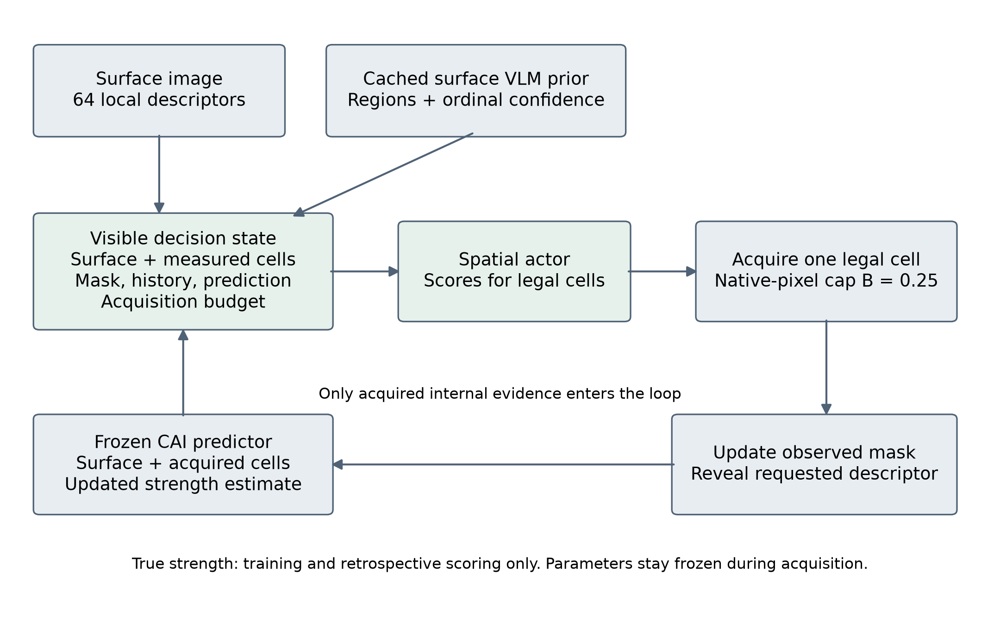
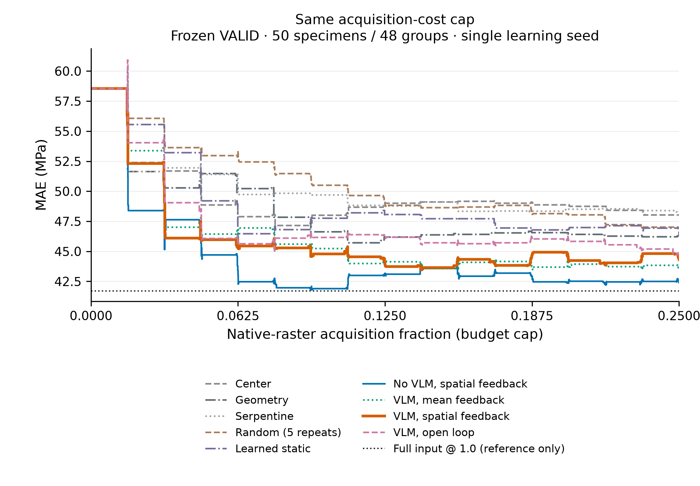
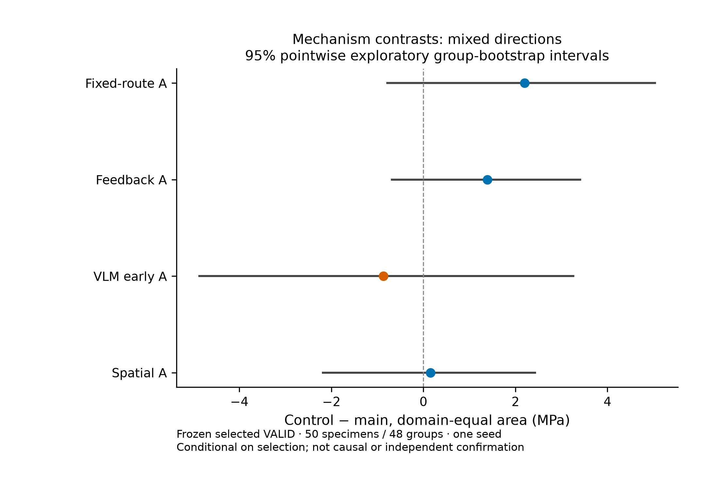
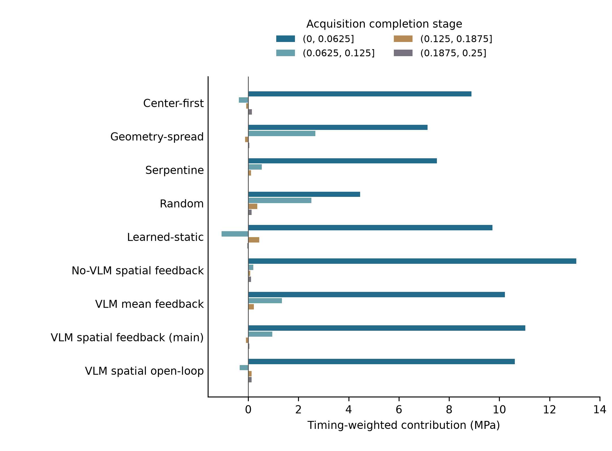
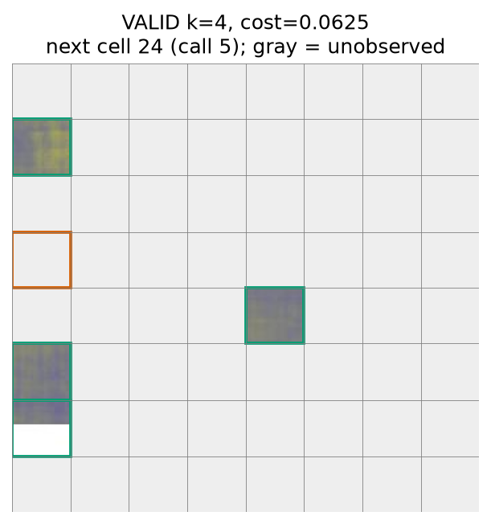
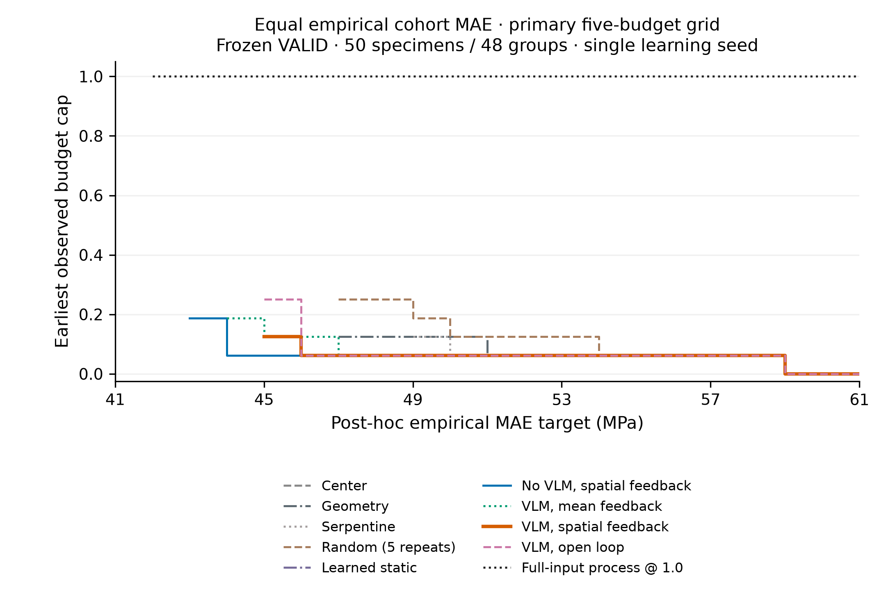

Author-review draft. Author metadata pending.
Estimating compression-after-impact strength from incomplete internal observations requires deciding which information to acquire and when to acquire it. We formulate C-scan image acquisition as a sequential assessment task in which surface information is initially available and internal cells are revealed under a native-pixel budget. A frozen vision-language model supplies surface-region priors, a learned spatial actor updates acquisition decisions from visible evidence, and a separate frozen predictor estimates strength. Policy learning combines normalized trajectory error with terminal absolute error. We compare nine acquisition strategies through offline image replay on 50 validation specimens from six domains, using the same predictor and checkpoints selected on that validation set. Under a 25% acquisition cap, the main policy achieved a mean absolute error of 44.286 MPa, compared with 46.910 MPa for geometry-spread. A signed decomposition of saved prediction changes identifies how acquisition timing contributes to trajectory quality. Component comparisons were mixed: feedback without the vision-language prior performed better, and all four component-related exploratory intervals included zero. Complete input achieved 41.690 MPa, a quality level not reached by the partial-acquisition policies. Matched-quality acquisition reductions depended on the target and comparator. The framework connects observation allocation to mechanical assessment while distinguishing observed image-acquisition trade-offs from independent validation and physical inspection-time savings.
Keywords: compression after impact; task-driven acquisition; C-scan; multimodal inspection; sequential decision making
Estimating the remaining compressive strength of an impacted composite requires connecting observable damage to a mechanical assessment. Surface appearances, internal damage images and compression-after-impact (CAI) strength measurements describe different aspects of that problem. Public composite-impact datasets make these observations available in corresponding specimen records (Hasebe et al. 2022a, 2025a). They also make it possible to ask how much of an internal image is useful for a given assessment task. When internal observations are acquired incrementally, prediction quality depends on both the available evidence and the choice of what to observe next.
A C-scan image can supply spatial information to a strength regressor once that image has been obtained. Recent work in Advanced Engineering Informatics directly predicts CAI strength and impact energy from C-scan images using a convolutional model (Mack et al. 2026). This supports a route from image content to mechanical assessment. An additional decision arises when the internal image is not initially available in full: which region should be acquired before the others, and how should that choice change after a measurement? A good complete-input regressor does not by itself specify an acquisition sequence or the quality of predictions along that sequence. Conversely, a spatially economical order is useful for assessment only if the acquired evidence supports the target prediction.
Adaptive inspection addresses parts of this decision problem. Autonomous ultrasonic work has used sequential observations to build damage-indication fields and guide subsequent measurements (Fuentes et al. 2020). More generally, dynamic feature-acquisition methods select information according to a prediction objective and an acquisition cost (Shim et al. 2018; Janisch et al. 2017; Covert et al. 2023). These ideas motivate making the downstream task explicit. For CAI assessment, the objective considered here is the error of the predicted strength over a limited acquisition range, together with its final error. The question is therefore not simply whether an observed region looks damaged, but whether the selected observations form a useful evidence sequence for this particular assessment model.
The available modalities create a natural information hierarchy. A surface image can be available before the internal examination, giving an inexpensive prior within the replay protocol. Internal C-scan content becomes visible only where acquisition has been completed. The next decision can then combine the initial surface information with the current observed subset and strength prediction. This organization requires care: storing complete images for offline evaluation must not allow the policy to use hidden internal content, and using strength labels to train the policy must not expose those labels during acquisition. Without explicit visibility rules, an apparent acquisition advantage could instead reflect information that would not have been available when the decision was made.
We formulate this process as task-driven multimodal C-scan acquisition. A frozen surface vision-language model (VLM) proposes candidate regions and ordinal confidence, which provide an initial spatial prior. A learned actor makes the acquisition decisions, updating its state after each newly observed internal cell. A separate frozen CAI predictor converts the currently available surface and internal evidence into a strength estimate. The VLM is therefore a source of surface priors rather than the controller of each step. The learning objective combines normalized error area across the acquisition budget with terminal absolute error, so it distinguishes early useful observations from the same prediction change obtained later.
To make the resulting comparison interpretable, all evaluated acquisition policies share the same downstream predictor and legal whole-cell budget rule. Fixed orders, a learned shared ranking, a specimen-conditioned open-loop policy and feedback policies represent different ways to organize observation. Additional comparisons remove the VLM prior or replace spatial interactions with mean feedback. Complete internal input provides a separate quality reference at full acquisition. This arrangement asks where state dependence helps in the observed trajectories while retaining cases in which an added component does not improve the estimate. It avoids attributing all differences between separately trained policies to a single architectural factor.
The study makes three contributions. First, it specifies a sequential CAI-assessment task with explicit surface availability, hidden internal regions, native-pixel acquisition costs and a common prediction model. Second, it develops an acquisition policy that conditions successive choices on permitted multimodal evidence and is trained by the downstream trajectory loss rather than an action demonstration. Third, it characterizes quality under matched acquisition caps, acquisition requirements at matched empirical quality and the timing-weighted error changes in the saved trajectories. The timing decomposition is an algebraic explanation of the loss, not a causal test of damage mechanisms.
We evaluate this framework by offline replay on 50 validation specimens from six source domains, with checkpoints selected on that same validation set. The paper therefore reports an exploratory within-cohort comparison, not independent deployment validation. Results address the linked questions of same-cap prediction quality, shared versus adaptive ordering, the stages at which error changes contribute, and the remaining gap to complete input. This evidence supports a concrete assessment of the acquisition method while keeping physical scan time, autonomous stopping and generalization to new specimen populations as distinct questions beyond the evaluated protocol.
Image-based assessment connects observable damage with a mechanical quantity that matters after impact. The public datasets of Hasebe and colleagues provide complementary resources: post-impact surface and internal images, and separately recorded compression-after-impact measurements (Hasebe et al. 2022a, 2025a). These resources support specimen-level correspondence between imaging and strength while preserving the difference between a damage observation and a load-bearing property. That distinction motivates the use of CAI error as the acquisition objective here. A region that is visually conspicuous is a candidate for inspection, but conspicuity alone does not establish its value for the strength estimate.
A direct journal neighbour is Mack et al.’s ResNet18-based framework for predicting impact energy and CAI strength from C-scan damage images (Mack et al. 2026). The authors’ institutional abstract describes direct image interpretation and an analysis of feature-importance maps. This establishes image-to-strength regression as an existing research direction. The distinction in the present study is the sequential allocation of partial observations and the associated quality–acquisition trajectory. We do not compare their reported R² numerically with ours because the data preparation and evaluation protocols differ.
Image regression and selective observation address related but separable questions. A predictor must interpret whatever information is supplied, while an acquisition policy must decide which missing information to request. Improving either component can improve the combined system, but changing both together complicates interpretation of a comparison. The common frozen predictor used here deliberately fixes the assessment mapping across acquisition strategies. This design makes the supplied subsets and their ordering the experimental focus, rather than claiming that the selected regressor is the strongest possible model for complete C-scan images.
Autonomous ultrasonic acquisition already has a substantial conceptual precedent. Fuentes et al. formulate the selection of inspection locations through Bayesian optimization and robust outlier analysis (Fuentes et al. 2020). Their institutional abstract describes sequentially updating a two-dimensional field of novelty indices and selecting locations with evidence of damage, with component damage probability as an output. Thus, choosing the next ultrasonic observation from information acquired so far is not introduced by the present work. The pertinent difference is the task endpoint: we optimize a CAI regression trajectory under an image-pixel budget rather than the reported damage-indication objective.
This distinction also clarifies the status of the fixed controls. A geometry-spread order measures broad spatial coverage, while center-first concentrates observations near the image centre. Neither reproduces an entire autonomous inspection system, and serpentine image order alone does not model robotic travel efficiency. The controls instead provide transparent alternatives under identical replay rules. The literature motivates adaptive inspection; the empirical comparison in this paper concerns the specified nine acquisition strategies and their shared strength predictor.
Dynamic feature acquisition provides the broader learning formulation. Shim et al. jointly learn a classifier and an acquisition agent, using a set representation of observed features and actions that either acquire information or stop and predict (Shim et al. 2018). Janisch et al. formulate costly-feature classification as sequential decision making, with feature requests and classification actions (Janisch et al. 2017). Their formulations show that prediction quality and information cost can be optimized together. The present policy instead uses a fixed acquisition cap and a frozen regression model, without a learned classification or stopping action. This is an application-specific choice that preserves a common assessment model for the comparison, rather than a general argument against joint learning.
Covert et al. develop a greedy dynamic-selection method based on conditional mutual information and amortized optimization (Covert et al. 2023). Their formulation uses a fixed feature-count budget with uniform costs; its regression result relates squared-error optimality to conditional variance. Our whole-cell native-pixel costs and absolute-error trajectory objective differ from those assumptions. We therefore use this work to position task-relevant acquisition, not as an optimality guarantee or a reproduced baseline. Policy-gradient learning supplies the optimization mechanism in our implementation (Williams 1992), while the manuscript contribution lies in the inspection-state contract, common-predictor comparison and process-level evidence.
Together, these lines locate the work between image-based mechanical assessment and sequential information acquisition. The method combines a surface-derived starting prior with evidence-dependent internal acquisition, then evaluates both intermediate quality and the final strength estimate. This connection is useful precisely because damage indication, classification utility and CAI regression error need not assign the same value to an observation. The closest-work matrix in the supplementary material records the verified comparison dimensions and leaves inaccessible details explicitly unverified.
The inspection task is to acquire a limited subset of an internal C-scan image while maintaining an estimate of compression-after-impact (CAI) strength. For each specimen, let S denote the available surface image, X the internal image, and y the measured CAI strength in MPa. We partition each image into an 8×8 grid with index set I={1,…,64}. An action acquires one previously unobserved internal cell. Thus, the decision concerns a region of an existing image in offline replay; it does not specify an individual acoustic waveform, probe displacement or physical scan command. The surface image is available before internal acquisition begins.
After t actions, the observed set is \(\Omega_t\) and its binary indicator is \(M_t\). The cumulative acquisition fraction \(c_t\) is the number of unique acquired native image pixels divided by the number of pixels in the complete internal image. Grid boundaries are rounded on the native image, so cell costs need not be identical. We retain these actual pixel counts when checking affordability and evaluating a trajectory. With B=0.25, the legal action set contains only unobserved cells whose complete acquisition keeps \(c_t\) within B. Acquisition ends when this set is empty. This rule defines a budget-limited experiment without a learned stopping decision.
A frozen predictor produces \(\hat{y}_t=P_{\mathrm{all}}(S,M_t\odot X,M_t,c_t)\). The policy selects the next cell from the currently legal set using surface information and, for feedback policies, the acquired internal evidence and current prediction. The true strength y is available to training and retrospective scoring, but is excluded from the decision state. This separation allows the acquisition policy to be trained for a downstream assessment objective without supplying the answer when selecting an observation. The comparison then asks which policy supplies a useful sequence of observations to the same predictor.
We evaluate both the trajectory and its final estimate. Let \(e_t=|\hat{y}_t-y|\) and let e(c) hold the most recently available error constant until the next acquisition completes. The normalized trajectory error and objective are
\[A(B)=\frac{1}{B}\int_0^B e(c)\,dc,\qquad J=A(B)+0.25e_T.\]
Both terms are measured in MPa and lower values are preferable. A(B) measures prediction quality over the available acquisition range, whereas the terminal term retains an explicit incentive for final quality. The last prediction is held from \(c_T\) to B if no remaining whole cell is affordable. Consequently, a trajectory cannot avoid its final holding cost by ending below the cap. This formulation couples what is acquired with when its effect becomes available.

A consistent spatial representation connects surface cues to candidate internal observations. Frozen ResNet18 encoders (He et al. 2015) produce a 512-dimensional descriptor for each of the 64 cells in each modality. Each cell is cropped before encoding, rather than extracted from a whole-image feature map that may already mix information across internal regions. The resulting surface and internal feature arrays each have shape 64×512. Corresponding grid coordinates are normalized to [0,1] in the row and column directions. These coordinates provide an explicit location reference for the predictor and acquisition policy; they do not establish a mechanically calibrated three-dimensional damage map.
Offline replay stores the complete internal feature array on the environment side so that any legal requested cell can be revealed. Model visibility is narrower than storage availability. Before cell mixing or spatial interaction, the predictor replaces unknown internal content with zero, and the spatial feedback actor replaces it with a learned mask vector. The binary observed flag distinguishes unknown cells from measured cells. Surface descriptors remain available everywhere. The actor also receives acquisition history and remaining budget, enabling it to distinguish a region that has not been visited from one that has already contributed to the current estimate.
A frozen Qwen2.5-VL-7B-Instruct model (Bai et al. 2025) supplies an additional surface prior. It examines clean and gridded surface views and returns candidate regions, ordinal confidence and cue-availability information. The acquisition actor receives numerical region indicators and confidence features, not the full generated explanation. Confidence is mapped from unknown, low, medium and high to 0, 1/3, 2/3 and 1, respectively; overlapping regions retain the highest confidence for a cell. These values encode an ordering of reported confidence rather than calibrated probabilities of internal damage. The VLM does not observe the hidden internal image, estimate CAI strength or produce a fresh language plan at every acquisition step.
The prior has a specific initialization role. At the first action, cells in the highest available reliable confidence level, restricted to medium or high, form a candidate set C0. The policy scores the affordable legal cells within that set. If the VLM is unavailable, reports no reliable cue, supplies no reliable region or leaves no affordable candidate, the ordinary legal set is retained. After the first acquisition, this hard restriction is removed while the numerical VLM features remain in the actor state. This design makes the initial prior explicit without constraining the entire sequence to a surface-selected region. Unavailability and an available response reporting no reliable cue are represented separately.
The information boundary can be summarized as follows.
| Information | Acquisition actor during evaluation | Frozen CAI predictor | Training/scoring side |
|---|---|---|---|
| Complete surface descriptors | Available | Available | Available |
| Surface VLM region features | Available in VLM variants | Not an input | Available |
| Acquired internal descriptors | Available in feedback variants | Available | Available |
| Unacquired internal descriptors | Hidden | Hidden | Stored only by replay environment |
| Observed mask and acquisition fraction | Available | Available | Available |
| Action history and remaining budget | Available to state-dependent policies | Not an input | Available |
| Current predicted CAI strength | Available in feedback variants | Output | Available |
| True CAI strength | Excluded | Excluded from input | Supervision and scoring only |
A common assessment model is necessary to distinguish acquisition choices from changes in the downstream regressor. All nine strategies are evaluated with the same selected MEAN_SC predictor. Surface and masked internal descriptors are separately projected to 64 dimensions. For each cell, their concatenation with its observed indicator and two coordinates passes through a two-layer cell multilayer perceptron with GELU activations. This yields a 64-dimensional cell representation that contains local surface information and, where measured, internal information.
The predictor forms two summaries: the mean over all 64 fused cell representations and the mean over measured cells. The measured mean uses a denominator bounded below by one, which makes the initial empty state well defined. The all-cell mean is not a surface-only branch: measured internal content is already present in its constituent cell representations. Concatenating both summaries with the actual acquisition fraction gives the regression-head input. The normalized output is transformed to MPa using the training-derived target mean and scale. The same computation accepts an empty internal set, a partially observed set or all 64 cells.
Neither the policy identifier nor the acquisition order enters this predictor. Therefore, for the same surface, observed cells and cost, its output is identical regardless of the policy that produced the state. Different acquisition sequences can still have different A(B), even when they eventually reveal the same subset, because intermediate predictions are available at different costs. This property gives the trajectory comparison its interpretation: changes in prediction quality arise through supplied observations and their timing, under a fixed assessment mapping.
The predictor used for reported validation results was selected at update 1750 and then frozen. During policy learning, rewards instead use three frozen cross-fitted predictors. Each training specimen is evaluated by the model assigned to its fold, trained with its capture group excluded. These models provide out-of-fold training feedback; they are not averaged into a three-model ensemble for the reported validation predictions. The complete-input reference also uses the common selected predictor, with all internal cells and the same surface information.
The spatial actor represents each candidate location jointly with the current assessment state. Surface and visible internal descriptors are each projected to 48 dimensions. Their concatenation with row and column coordinates, the observed flag, normalized action history, VLM region indicator and confidence is mapped to a 128-dimensional cell token. A separate query token represents cumulative cost, remaining budget, normalized current CAI prediction, VLM availability, the no-reliable-cue indicator and the fraction of observed cells. These 65 tokens pass through two Transformer encoder layers (Vaswani et al. 2017) with four attention heads and a feed-forward width of 256.
The resulting query representation supplies global context to every cell. An action head scores each concatenated contextual cell and query pair; illegal cells are excluded before selection. A separate value head estimates the remaining training cost from the query representation. The value head is a critic used to reduce policy-gradient variation, not the predictor of reported CAI strength. The architecture thus connects a local choice to the current observation set while retaining a distinct assessment model. Its spatial interactions operate on already masked features, so the global context cannot retrieve hidden internal content through attention.
Policy-gradient learning (Williams 1992) minimizes the expected trajectory objective over training specimens and sampled actions. Specimens are sampled by first choosing a domain uniformly and then a physical specimen within that domain. For each trajectory, the frozen cross-fitted predictor supplies absolute errors used to construct cost-to-go targets. The actor loss sums log action probabilities weighted by detached cost-to-go minus the critic estimate; a squared-error critic loss with weight 0.5 and an entropy term complete the optimization objective. Costs are normalized by the existing training target scale, and the discount factor is one. The shared static policy uses a zero baseline. This is task-loss-based policy learning, without an action-demonstration target.
During training, actions are sampled from the legal categorical distribution. During evaluation, the highest-scoring legal action is selected and the actor is evaluated again after the observation update. Parameters remain frozen during this sequence. The open-loop diagnostic removes internal descriptors and the current prediction from the decision computation but retains surface features, location, prior, acquisition history and budget. Its downstream predictor still incorporates the acquired internal information. The no-VLM diagnostic retains surface and internal feedback while removing the VLM features and initial restriction. These distinctions separate the information used to choose a cell from that used to assess the specimen afterwards.
Algorithm 1. Budget-limited task-driven acquisition
Input: surface features S, cached surface prior V, frozen actor pi and predictor P
Set observed mask M=0, history H=0 and native-pixel cost c=0
Compute the initial CAI prediction p=P(S, masked_X, M, c)
Repeat:
Construct L from unobserved cells affordable under B=0.25
If L is empty, terminate
On the first step, restrict L to the highest reliable C0 if feasible
Build the permitted actor state from S, V, M, H, p and budget
Score legal cells and choose a=argmax pi(state) over L
Reveal internal descriptor X[a] from the replay environment
Update M, H and c using the newly acquired native pixels
Update p=P(S, masked_X, M, c)
Record the state and proceed with unchanged model parameters
Return the acquisition sequence and partial-observation predictions
Use y only outside this loop to calculate evaluation errorsThe trajectory objective admits a direct decomposition using saved prediction changes. For an acquisition completed at \(c_t\), define \(\delta_t=e_{t-1}-e_t\) and
\[g_t=(1-c_t/B)\,\delta_t,\qquad A(B)=e_0-\sum_{t=1}^{T}g_t.\]
An error reduction contributes in proportion to the budget interval over which its updated prediction can influence the trajectory area. An error increase produces a negative contribution and is retained. An observation completed exactly at B has zero contribution to A(B), although its prediction change can affect the terminal term in J. The identity also includes the holding interval after a trajectory ends below B; no additional extrapolated observations are required. Supplementary material gives the telescoping derivation.
For descriptive analysis, we group these signed contributions by acquisition completion stage: (0,0.0625], (0.0625,0.125], (0.125,0.1875] and (0.1875,0.25]. A contribution assigned to a stage measures its weighted effect over the remaining budget, rather than an improvement confined to that stage’s integration interval. Aggregating first within an episode, then across repeated runs of each specimen, within domains and equally across domains preserves the estimand used for A. This is an accounting identity for the observed loss, not a causal allocation of gains to components or a new intervention on the acquisition policy.
The study uses source image datasets (Hasebe et al. 2022a) and CAI measurements (Hasebe et al. 2025a, 2025b) assembled into an existing image-based composite-impact cohort comprising 276 physical specimens in six source domains. Each specimen is associated with a surface image, a registered internal C-scan crop and a CAI-strength measurement. Labels originate from the source authors’ workbooks, with measurement semantics explicitly identified as CAI strength and normalized to MPa. The specimen identifier, source version, worksheet and cell location are retained in the provenance records. Surface-to-internal correspondence is inherited from the registered specimen manifest, which records exact specimen identity and image hashes. The experiment replays these image regions; it does not collect new ultrasonic measurements or treat a displayed C-scan raster as a raw acoustic waveform.
Source relationships are handled at the capture-group level. Specimens sharing a source image identity, path or registered crop identity are joined transitively before splitting. The resulting 259 groups include 17 groups containing multiple physical specimens. A deterministic per-domain ordering assigns the first floor(0.6 n) groups to TRAIN, the next floor(0.2 n) to VALID and the remainder to TEST. All members of a group stay in the same partition. This produces 161 training specimens in 152 groups, 50 validation specimens in 48 groups and 65 reserved specimens in 59 groups. Table 1 lists physical counts by source domain; the supplementary provenance table supplies source versions and verified configuration descriptions.
| Source domain and configuration | TRAIN | VALID | Reserved TEST | Total |
|---|---|---|---|---|
| 74t7kcdgkr: 8-layer cross-ply (Hasebe et al. 2022f) | 25 | 9 | 11 | 45 |
| cgtnjyggtm: 24-layer quasi-isotropic (Hasebe et al. 2022e) | 29 | 9 | 11 | 49 |
| w68dtmpfyf: 16-layer quasi-isotropic (Hasebe et al. 2022c) | 25 | 8 | 10 | 43 |
| xcmzfsbd9t: 24-layer cross-ply (Hasebe et al. 2022d) | 35 | 9 | 15 | 59 |
| yfxyg8jm46: 16-layer cross-ply (Hasebe et al. 2022b) | 25 | 8 | 9 | 42 |
| ykhs7s2dck: 8-layer quasi-isotropic (Hasebe et al. 2022g) | 22 | 7 | 9 | 38 |
| Total physical specimens | 161 | 50 | 65 | 276 |
| Total capture groups | 152 | 48 | 59 | 259 |
Table 1. Cohort composition. Configuration labels follow the version-1 source dataset descriptions. Per-specimen thickness is not inferred from layer count. All reported performance estimates use the 50 VALID specimens. Reserved TEST outcomes were not evaluated in this study.
The reported validation specimens were also used for checkpoint selection, and the underlying cohort includes specimens reused in earlier development. Accordingly, the results characterize selected validation performance rather than independent confirmation. Capture-group isolation addresses recorded image-source overlap across partitions, but does not by itself make this historically reused cohort an untouched external benchmark. No performance statement in this manuscript uses the 276-specimen total as its evaluation sample size.
We compare nine acquisition strategies under the same legal-cell rule, native-pixel cost and frozen predictor. Four require no policy training. Center-first ranks cells by distance to the grid centre. Geometry-spread starts at a corner and repeatedly selects the cell with the greatest minimum squared grid distance from previously selected cells, with deterministic index-based tie breaking. Serpentine alternates horizontal direction across successive rows. Random uses a seeded permutation of all cells; five saved repeats are included. These are explicit acquisition rules for the replay experiment, rather than representations of all industrial inspection practices.
Five learned strategies test different levels of decision information. Learned-static has 64 shared position logits and receives no specimen image or prediction. VLM spatial open-loop uses the surface, prior and acquisition bookkeeping but excludes acquired internal content and prediction feedback from action choice. The main VLM spatial feedback policy adds those feedback channels. No-VLM spatial feedback removes the VLM channels and initial candidate restriction while retaining surface descriptors. VLM mean feedback retains the main information sources but replaces Transformer interactions with a mean-feedback architecture. The last comparison is not capacity matched: the spatial actors have 378,978 parameters, compared with 91,650 for the mean actor and 64 for learned-static.
| Policy | Decision information | Structure | First-step VLM restriction |
|---|---|---|---|
| Center-first | Position only | Centre-distance order | No |
| Geometry-spread | Position only | Farthest-point order | No |
| Serpentine | Position only | Alternating row order | No |
| Random | Position only | Five seeded permutations | No |
| Learned-static | Shared position logits | 64 parameters | No |
| VLM spatial open-loop | Surface, VLM, mask/history, cost | Two-layer spatial actor | Yes |
| VLM spatial feedback | Open-loop inputs plus internal/prediction feedback | Two-layer spatial actor | Yes |
| No-VLM spatial feedback | Surface, internal/prediction feedback, bookkeeping | Two-layer spatial actor | No |
| VLM mean feedback | Same information as main | Mean-feedback actor | Yes |
Table 2. Acquisition-policy information and structure. The state-permission table in Section 3 specifies channel visibility. Across all controls, the assessment model still receives every actually acquired internal cell. The complete-input reference is listed separately at fraction 1.0 and uses all 64 internal cells plus surface descriptors with the same predictor. It has no observed acquisition trajectory and therefore no A(B).
Perception and assessment were frozen before the evaluated policy runs. The fit-side VLM cache contains 211 specimen records, of which 205 are available and six are terminally unavailable. The latter remain distinct from valid no-cue responses. The common predictor was selected at update 1750; the three cross-fitted training-feedback predictors were selected at updates 1250, 750 and 1000. Policy evaluation uses the common predictor only. No VLM inference, feature encoding or model fitting was repeated to prepare the manuscript analyses.
Policies were optimized with AdamW (Loshchilov and Hutter 2019), learning rate 3×\(10^{-4}\), weight decay \(10^{-4}\), batch size 16 and gradient-norm clipping at one. Entropy regularization decreased linearly from 0.01 to zero over each prescribed run. The value-loss weight was 0.5, the discount factor was one and the terminal-error weight was 0.25. Every 250 updates, deterministic validation trajectories were scored by six-domain-equal A(B). The selected checkpoint minimized this measure, with an improvement tolerance of \(10^{-12}\) and patience of four validation evaluations. Four policies each ran for 1250 updates and learned-static for 750, giving 5750 actual updates and 23 saved candidate evaluations.
One initialization was used per learned method, with seeds 2026091301–2026091305 assigned to main, no-VLM, open-loop, static and mean policies, respectively. Selected updates were 250, 1000, 750, 250 and 250 in that order. Random repeats used seeds 2026091250–2026091254. These method-specific initializations form one policy-seed panel, not repeated training seeds for each method. Evaluation comprises 650 saved method–specimen–repeat episodes, containing 10,227 acquisition events. Runs and events are dependent descriptions of 50 physical specimens and are not additional independent observations. Detailed training settings and software versions are retained in the supplementary material.
The main common-cap grid is {0,0.0625,0.125,0.1875,0.25}. At each cap, we use the last prediction whose acquisition cost is at or below that cap. Actual fractions are reported separately because complete native cells may leave an unspent remainder. A supplementary event grid contains the 599 shared breakpoints obtained from saved episodes. Both grids retain current-state prediction reversals, with no monotonic correction or extrapolation beyond 0.25. Full-input quality is supported only at fraction 1.0.
At each cap, absolute and squared losses are averaged across Random repeats within each physical specimen and then pooled over the 50 specimens. RMSE is the square root of pooled MSE. R² is computed across specimens within each repeat and then averaged; predictions are not ensembled. In contrast, A and early A first average episode losses within a specimen, then average specimens within each domain, and finally weight the six domains equally. Early A uses an integration endpoint of 0.0625. These different aggregations mean a pooled endpoint metric and a domain-equal trajectory metric need not rank policies identically.
Reported uncertainty comes from the existing 5000-replicate, within-domain capture-group bootstrap, using seed 2026091401. Resampled groups carry all their physical members with their sampled multiplicities; the same saved weights support paired method comparisons. The 95% intervals are pointwise exploratory intervals conditional on selected validation checkpoints. They do not correct checkpoint selection, repeated historical use, post hoc analysis choices or multiple comparisons. We report their numerical ranges rather than interpreting them as independent confirmatory tests.
Matched-quality analysis first computes each method’s group-level MAE curve and then finds its earliest supported cap b*(q) satisfying \(\operatorname{MAE}(b)\le q\). Relative acquisition reduction against a control is \(1-b^*_{\mathrm{main}}(q)/b^*_{\mathrm{control}}(q)\), when both are reached and the control denominator is positive. The integer targets 41–61 MPa and 21 source-labelled anchors, including full-input quality, are descriptive empirical targets rather than prespecified engineering acceptance limits. Main-grid and event-grid results remain separate. Unreached targets, zero denominators, negative reductions and later recrossings are retained. The calculation compares population curves; it does not choose a label-informed stopping time for individual specimens.
Reproducible data visualization and manuscript preparation were assisted by Codex (GPT-6, OpenAI). The added timing figure reads the saved numerical decomposition, and the workflow schematic is drawn with deterministic Python code; neither uses generated specimen imagery. The authors must review the scientific content and finalize the disclosure before submission.
Task-driven feedback produced lower observed errors than several fixed acquisition rules under the common 25% cap. The main policy achieved a pooled MAE of 44.286 MPa, RMSE of 58.517 MPa and R² of 0.659 on the 50 validation specimens. Geometry-spread achieved 46.910 MPa MAE, giving a paired improvement of 2.624 MPa with a 95% exploratory interval of [−0.488,5.925] MPa. The actual acquired fraction for the main policy averaged 0.247437 and ranged from 0.234492 to 0.249999. The comparison is therefore at a matched cap, with small specimen-dependent differences in the completed native-pixel fractions.
Across the entire acquisition range, the main policy had a six-domain-equal A of 45.110 MPa, compared with 47.311 MPa for geometry-spread. The lower area indicates that its advantage was not confined to the terminal estimate. However, area and terminal quality capture different properties: Random had a slightly lower endpoint MAE than geometry-spread but a higher A. Inspecting only the final state would miss this difference in the quality supplied during acquisition. Figure 2 retains the observed stepwise MAE paths, including reversals, and Supplementary Table S2 reports all five common caps with their actual acquisition ranges.
| Acquisition policy | A (MPa) | Early A (MPa) | MAE at cap (MPa) | RMSE at cap (MPa) | R² at cap |
|---|---|---|---|---|---|
| Center-first | 48.475 | 51.821 | 48.027 | 65.223 | 0.577 |
| Geometry-spread | 47.311 | 51.880 | 46.910 | 62.278 | 0.614 |
| Serpentine | 48.911 | 52.170 | 48.013 | 63.041 | 0.605 |
| Random | 49.594 | 54.117 | 46.886 | 61.941 | 0.618 |
| Learned-static | 47.977 | 52.946 | 46.993 | 62.168 | 0.616 |
| No-VLM spatial feedback | 43.597 | 48.771 | 42.385 | 56.534 | 0.682 |
| VLM mean feedback | 45.263 | 50.390 | 43.611 | 59.012 | 0.654 |
| VLM spatial feedback (main) | 45.110 | 49.642 | 44.286 | 58.517 | 0.659 |
| VLM spatial open-loop | 46.501 | 51.048 | 44.822 | 59.663 | 0.646 |
| Complete input, fraction 1.0 | — | — | 41.690 | 53.944 | 0.711 |
Table 3. Common-predictor comparison. Partial policies use cap 0.25; the complete-input row is a separate cost-1.0 reference. A integrates over 0–0.25 and early A over 0–0.0625, each normalized by its own interval. Areas weight domains equally; endpoint measures pool physical specimens after repeat-loss averaging. All values are selected-validation estimates, with n=50 physical specimens. Actual fraction ranges and full paired results are provided in the supplementary source tables.

The three policies spanning a shared ranking, specimen-conditioned open-loop choice and internal feedback had progressively lower area estimates: 47.977, 46.501 and 45.110 MPa. This sequence connects the experiment to the intended engineering distinction. Learned-static offers one order for every specimen. Open-loop can use surface variation to allocate observations differently, while feedback can revise its allocation after seeing internal content. Their performance pattern is consistent with useful specimen dependence, followed by further improvement when current acquired evidence participates in the next decision.
The main policy improved on open-loop by 1.391 MPa in A and 0.536 MPa in endpoint MAE. The area direction favoured feedback in five of the six domains. The comparison therefore links feedback to a lower observed trajectory loss over much of this cohort, while the interval in Table 4 retains uncertainty about the difference. These adjacent contrasts do not identify percentages of total improvement caused by individual modules: policies were separately trained, used different initializations and visited different states. Their value is to show the consequences of distinct decision-information arrangements under the same assessment model.
| Contrast, control minus main | Measure | Difference (MPa) | 95% exploratory interval (MPa) |
|---|---|---|---|
| Geometry-spread versus main | A | 2.200 | [−0.787,5.033] |
| Open-loop versus feedback | A | 1.391 | [−0.683,3.406] |
| No-VLM versus VLM | Early A | −0.872 | [−4.870,3.255] |
| Mean versus spatial feedback | A | 0.152 | [−2.186,2.425] |
Table 4. Component-related comparisons. Positive values favour the main policy for the stated measure. All four intervals contain zero. Intervals use the existing paired within-domain capture-group bootstrap and are conditional on selected validation checkpoints. Figure 3 displays these same signed contrasts; the VLM contrast uses early A rather than full-range A.
The no-VLM feedback policy obtained lower full-range A and endpoint MAE than the main policy, at 43.597 and 42.385 MPa, respectively. Its surface descriptors were still present, so this result concerns the additional VLM prior rather than the utility of surface information as a whole. Spatial interaction likewise provided a mixed comparison with mean feedback: the main actor’s area was lower by 0.152 MPa and its RMSE by 0.495 MPa, but its endpoint MAE was higher by 0.675 MPa. These results support keeping the components conceptually distinct instead of treating architectural complexity as evidence of a uniform performance gain.

The saved-event decomposition makes the timing of observed error changes explicit. All methods shared an initial domain-equal error of 57.049 MPa. For the main policy, the timing-weighted contributions grouped by the four acquisition-completion stages were 11.031, 0.960, −0.091 and 0.038 MPa. Their sum, 11.938 MPa, subtracts from the common initial error to recover A=45.110 MPa. Across all 650 episodes, the largest discrepancy between direct integration and this identity was below 3×\(10^{-14}\) MPa. Aggregating the contributions reproduced every method’s saved area and every contrast with the main policy to floating-point precision.
Although the main policy’s largest absolute contribution was assigned to the first stage, its difference from open-loop was concentrated in the second stage. Open-loop contributions were 10.616, −0.336, 0.132 and 0.135 MPa. Thus, the main-minus-open-loop stage differences were approximately 0.415, 1.296, −0.223 and −0.097 MPa, summing to the 1.391 MPa area improvement. The first-stage contribution describes early observations that influence much of the remaining trajectory; it is not an estimate of improvement confined to the first 6.25% interval. The second-stage contrast shows why a blanket explanation based only on a better starting region would be incomplete.
Geometry-spread displayed a different timing pattern, with contributions of 7.143, 2.672, −0.124 and 0.048 MPa. Relative to that rule, the main policy gained more from first-stage completions but less from the second stage. Learned-static also accumulated a substantial first-stage contribution, 9.729 MPa, followed by a negative second-stage contribution of −1.058 MPa. Figure 4 displays all nine policies and retains negative stage totals. These patterns express how their actual prediction changes enter the loss; they do not isolate the mechanical importance of particular cells or prove that a counterfactual swap in acquisition order would have the same effect.

The event records also show why useful sequential acquisition should not be equated with improvement at every step. Among 793 main-policy observations, 381 increased absolute error. A newly observed descriptor changes the input of a finite learned regressor and can move an individual estimate away from its label even when the overall acquisition sequence performs well. The signed accounting retains these reversals instead of replacing current predictions with the best historical estimate. This distinction is relevant to interpreting both the area curves and empirical quality crossings.
Three previously fixed specimens, c8-16, q16-29 and q24-48, provide the process illustrations. Their source-domain identifiers and exact image paths are retained in the supplementary case index. The illustrations show the available surface prior, actual first action, acquired regions at selected steps and the corresponding prediction trajectory. The higher-error q24-48 case is included alongside the other two. The main policy’s first proposal was genuinely narrower than the environment legal set for 45 of 50 specimens; subsequent actions were selected after the hard first-step restriction had been released. The diagrams document executed choices and visible-state updates, without assigning language reasoning, attention maps or damage-ground-truth explanations to those choices.

An acquisition advantage depends on the target quality and the comparator. At q=46.909917 MPa, the geometry-spread endpoint MAE used as one of the complete anchor set, the main policy first met the target at cap 0.0625 on the five-point grid. Geometry-spread first met it at 0.125, giving a 50% reduction in the earliest supported cap. Learned-static also first met it at 0.0625, giving zero reduction relative to that comparator. Using geometry-spread’s nominal 0.25 endpoint as its required cost would overstate the reduction, because that method had already reached the same empirical quality earlier.
The finer event grid resolves earlier crossings but also reveals their instability. For the same target, the earliest main, geometry and static caps were 0.031388, 0.093426 and 0.062407, respectively. These correspond to reductions of 66.40% and 49.70% against geometry and static on that grid. At the main policy’s crossing, its actual mean fraction was 0.030861 and MAE was 46.507051 MPa; its curve subsequently rose above the target. We retain this event-grid result in the supplementary analysis, separately from the primary 50% and 0% comparisons, because grid resolution and first-passage reversals materially change its interpretation.
Figure 6 presents the full main-grid target range rather than a single favourable threshold. Supplementary tables retain all integer targets and source-labelled anchors on both grids, including unreached targets and negative or undefined ratios. This representation answers a practical descriptive question: at what supported cap did each population curve first achieve a specified quality? It does not supply an individual stopping certificate. An operational stopping policy would need information available without knowing the specimen’s true CAI strength, and the present first-passage calculation does not provide that capability.

The common predictor with complete internal and surface input achieved 41.690 MPa MAE, 53.944 MPa RMSE and R²=0.711. The main policy at the 25% cap therefore retained a 2.596 MPa MAE gap to complete input. None of the nine partial-acquisition policies reached the complete-input MAE anywhere in either observed grid. The full-input point helps locate the quality cost of partial observation under this predictor, but does not define an optimal industrial reference or a missing trajectory between fractions 0.25 and 1.0.
The engineering contribution is the explicit coupling between an assessment objective and the organization of acquired information. A policy can be compared at a shared cap, through its complete observed error trajectory, and at a shared empirical quality target. The agreement or disagreement among these views is informative: a lower area does not ensure a lower terminal MAE, and one threshold can show a reduction against geometry while showing none against a learned shared order. The framework makes those distinctions measurable rather than expressing inspection efficiency as a single percentage detached from a quality requirement.
Domain-level results further bound the comparison. Against geometry-spread, the main policy’s area difference favoured it in three domains and favoured the control in three. Against open-loop, five domain differences favoured feedback. This heterogeneity is compatible with acquisition decisions depending on specimen evidence, but it also leaves room for differences in predictor quality, source imaging and the distribution of specimens across domains. The reported data do not determine a material-specific causal explanation. The supplementary domain table preserves these directions without treating the six domains as six independent replications of the entire learning experiment.
The current evidence supports an offline image-acquisition method and a quality–acquisition analysis on a selected validation cohort. Physical deployment remains a separate question because native image pixels omit probe travel, coupling, setup and measurement latency; a 25% image fraction cannot be translated directly into a 75% time saving. A single policy-seed panel and validation-based selection also limit inference about reproducibility and transport to new specimens. Independent specimen evaluation and instrument-linked acquisition costs would resolve those specific uncertainties. Within the present scope, the method supplies a reproducible way to examine which information is acquired, when it affects CAI prediction and where partial observation leaves a remaining quality gap.
This study formulated partial C-scan acquisition as a sequential decision problem for compression-after-impact assessment. A surface prior, a state-dependent acquisition actor and a separate frozen CAI predictor organize the flow from currently visible evidence to the next internal observation. The common-predictor design permits comparisons of acquisition policies without changing the assessment mapping, while the trajectory objective accounts for both prediction quality and the stage at which observations become available.
On 50 selected validation specimens, the main policy achieved 44.286 MPa MAE under a 25% acquisition cap, compared with 46.910 MPa for geometry-spread, and a lower trajectory area than the shared static and open-loop policies. The signed timing decomposition recovered these area differences from saved events and located the largest main-versus-open-loop contribution difference in the second completion stage. Component results were mixed: no-VLM feedback performed better, all four reported component-related intervals crossed zero, and partial acquisition did not reach the 41.690 MPa complete-input MAE.
The resulting contribution is a reproducible way to connect observation allocation with a mechanical assessment objective and to report its quality–acquisition trade-offs. The observed comparisons apply to offline image replay with validation-based checkpoint selection and one policy-seed panel. Instrument-linked costs and independent specimen evaluation remain necessary before interpreting these image-fraction results as physical inspection-efficiency gains.
Author names, affiliations, corresponding-author details, funding, CRediT contributions and competing-interest statements require author confirmation before submission. Public source datasets are cited in the manuscript. The code and derived-result release location and permission checks remain pending; no public release is asserted here.
During manuscript preparation, the authors used OpenAI Codex (GPT-6) to assist with drafting, organization, reference screening, figure code and document preparation. The authors must review and verify all content and take responsibility for the final manuscript. Research use of the vision-language model is described in Section 3. The detailed draft declaration is provided in the submission materials.